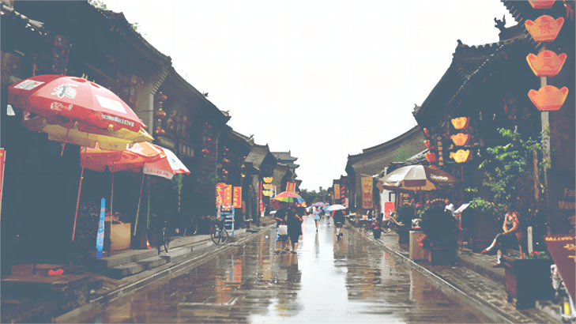

一座小城，远离都市繁华的喧嚣,在深深大山独居-隅，任清风拂面，任细雨霏霏，
石板路已磨得光滑，老城墙已斑驳褪色，吊脚楼已爬满青苔......
初识凤凰源于沈老先生的《边城》，山水相绕、风光秀丽、古色古香的完美风景，翠翠的善良、
傩送与天宝的痴情、爷爷的淳朴，还有大黄狗的憨态，人情美与自然美天衣无缝的交织结合。没有尘世的喧闹，凌然于物欲横流之上，这怎一个“美”字了得!
凤凰古城的主要景点有沈从文故居、熊希龄故居、杨家祠堂、东门城楼、古城博物馆沱江泛舟等。
整个古城不大，适合走路游览，常规路线是从北门城楼走到东门。无论时间多匆忙，都请你一定要去看一眼沈从文先生的故居,
不然来这一趟凤凰古城多少都失去了很重要的东西，特别是对于喜欢《边城》的读者来说。
喜欢有些情趣的朋友可以购买门票去沱江泛舟,20分钟的水上项目,无论是和朋友还是爱人很适合。白天的凤凰古城是古色古香的。
- .到了夜晚就呈现出一种灯光璀璨的感觉，黄色的暖光让整个古城都活了起来，或许夜晚的凤凰古城才是它最美的样子吧。八点到十点有凤凰的篝火晚会，有苗族歌舞等。
住宿以各种客栈和青年旅舍为主，观景的话临沱江的客栈是最好的，其中虹桥段为中心，但是缺点是要贵些，晚上酒吧很热闹，也会有些吵。
其次的话，可以往下游再选，优点是比较清静，临江，价格也会实惠些。如果没有观景要求的话,建议还是选择临江后一排的，虽然看不见沱江，但是步行也很快就能到达,毕竟古城井不大。
甜米酒:是糯米酿造的一种低度甜酒。吃前记得用竹筒装着放在水中温热。苗家社饭:凤凰的一大特色，饭中有田野采来的鲜嫩社菜、野葱糯米、
土家腊肉。苗家酸鱼:是凤凰苗乡独步天下的名菜.土家腊肉:经过特殊的香料腌制，再用柏树叶火烧熏制而成，因此比一般的腊肉更可口。
血粑鸭:凤凰的另一大招牌。平锅跳跳鱼:极具湘菜风味，香辣爽滑，充分满足你对辣的期待。凤凰米粉:汤头鲜香味浓，早上来一碗热腾腾的米粉下肚，在当地习以为常。
我国历史悠久，历经了上百个朝代的变迁和更换，留下了很多著名的历史古城。大家都在说着,老祖宗留下来的这些古村古镇都被现代人给毁了，越来越商业化。
其实不然，凤凰古城不同的人眼里当然有不同的样子。其实说去逛凤凰古城，看得不仅是风景，更是历史，是文明。
